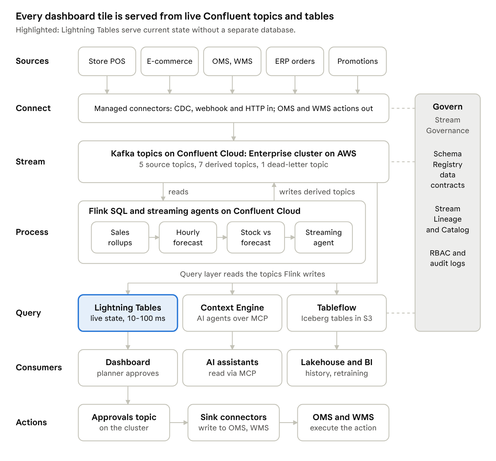
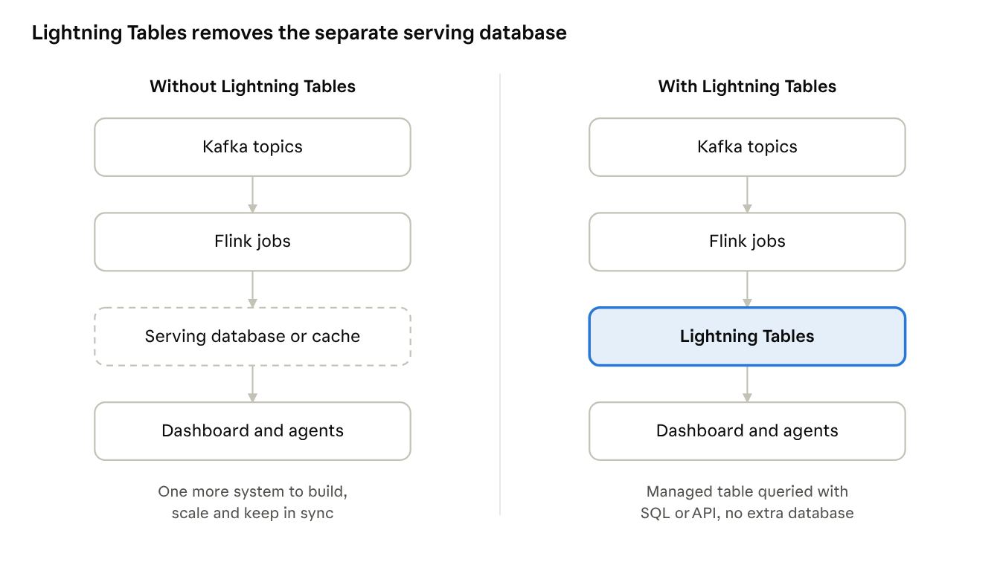
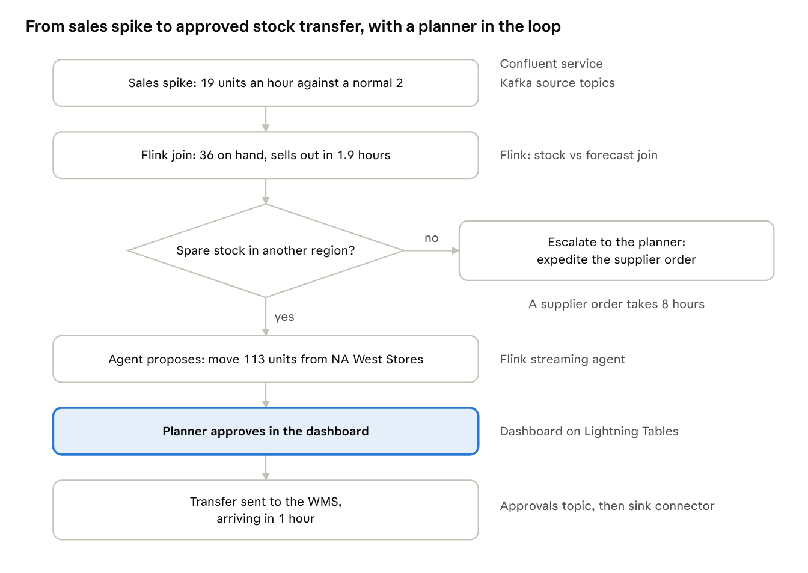

← Back to HomePage
← Back to HomePage
StreamHouse Demos
A Streamhouse keeps the dashboard, the inventory agent, and analytics on the same current picture of the business. Connectors bring source systems into Kafka. Flink turns those events into forecasts, stock health, and recommendations. Lightning Tables, the Real-Time Context Engine, and Tableflow serve that state to people and to the lakehouse. A planner’s approval goes back onto Kafka, and sink connectors carry the approved action to the order and warehouse systems. The agent can run as a Streaming Agent on Confluent Intelligence, or as an application you host. Both write the same events.

| Pillar | Confluent product | What it does |
|---|---|---|
| Stream | Kafka on Confluent Cloud | Durable record of every sale, stock movement, promotion, and supplier order. |
| Connect | Managed connectors | Brings in point of sale, e-commerce, order, warehouse, and ERP data, and writes approved actions back out. |
| Process | Confluent Cloud for Apache Flink | Sales rollups, hourly forecast, forecast-versus-inventory join, and stock-out and overstock detection. |
| Govern | Stream Governance and Schema Registry | Data contracts that reject bad records before they reach the forecast. |
| Query | Lightning Tables, Tableflow, Real-Time Context Engine | Serves live state to the dashboard and the agent, and sends history to the lakehouse. |
A conventional build adds a database or cache that someone has to scale and keep in sync with Kafka. Lightning Tables materializes the topics directly, so the dashboard and agents query a managed table.

The design uses five source topics, seven derived topics, and a dead-letter topic. Events for one product and location stay on the same key, so they remain ordered.
| Topic | Written by | Read by |
|---|---|---|
| sales.pos-events | Store point of sale | Flink rollups, Tableflow |
| sales.ecom-events | Web and app orders | Flink rollups, Tableflow |
| inventory.movements | Warehouse and order systems | Flink inventory position |
| supplier.orders | ERP | Flink restock logic |
| merch.promo-events | Planning tools | Flink forecast features |
| demand.sales-rollup | Flink | Forecast, Lightning Tables |
| demand.forecast | Flink | Health join, Lightning Tables |
| inventory.position | Flink | Health join, Lightning Tables |
| inventory.health | Flink | Lightning Tables, agent |
| ai.recommendations | Streaming agent | Lightning Tables, approval screen |
| ai.approvals and ai.actions | Approval screen, then Flink | Order and warehouse sink connectors |
| dlq.contract-rejects | Schema Registry rules | Rejection counter on the dashboard |
The job stays the same wherever the agent runs. It watches demand and stock as they change, across products, regions, and channels, and it proposes a transfer, a supplier order, or a markdown. A planner can approve each move, or the team can let the agent act. There are two ways to host it.
| Option | Where it runs | How it does the job |
|---|---|---|
| Confluent Intelligence Streaming Agents | On Confluent Cloud, as a Flink job. There is no separate agent server to run. | Each inventory health event wakes the agent. It reasons with a model, calls tools, and writes a recommendation back onto Kafka. |
| An application you host | Your own service, subscribed to the same topics. The live demo on this site follows this shape, without a cluster. | The service keeps its own loop. It reads the stream, decides, and publishes the same recommendation and approval events. |
Confluent Intelligence is the managed real-time AI layer on Kafka and Flink. A Streaming Agent is an event-driven agent that runs as a Flink job on Confluent Cloud, on the same stream as the forecast and the stock position. It does not poll a database, and it does not wait for a nightly batch.
You define it with a model, a prompt, and tools, in Flink SQL or in the Agent Management Console. A continuous Flink statement then calls that agent, with AI_RUN_AGENT, for each inventory health row that needs a decision. The runtime runs the reason-and-tool loop and returns one result. The statement writes that result to ai.recommendations.
The forecast is ordinary Flink SQL, not the model. Sales and promo events become an hourly forecast. Inventory movements and supplier orders become on-hand and on-order. A join of those two writes inventory.health: one row per product, region, and channel, with cover, risk, and the reason.
The agent is called only when that row says a location is running out or sitting on too much stock. A healthy row does not wake the model. The agent does not recompute the forecast. It decides what to do about a risk Flink has already measured.
The prompt states the policy: act when cover falls under the trigger, refill toward a target, leave every donor enough stock for its own forecast, and treat a supplier order as too late when it would arrive after the stock-out. The model does not invent those numbers. It calls tools, and the tools read the current tables.
| Tool | Where it runs | What it does |
|---|---|---|
| Find spare stock | Flink function | Looks across regions for the same product and channel. Returns on-hand, forecast, and how many units each region can give after keeping its own cover. |
| Supplier timing | Flink function | Returns how long a new supplier order takes, and how many units are already on order for this location. |
| Propose transfer | Flink function | Returns a recommendation: from, to, units, and the two reasons. It does not move stock. |
| Propose markdown | Flink function | Returns a recommendation to discount a location that will not sell through, and that no other region needs. |
| Escalate | Flink function | Returns a recommendation to expedite the supplier, because no region can spare the units. |
Lookup tools are Flink functions, so they read the health table and the Real-Time Context Engine inside the job. They are not a copy of last night’s warehouse file. The propose tools only shape the recommendation. An MCP tool is the option when a step must call a system outside Flink, such as a carrier cutoff. This stock decision does not need that. The numbers are already on the stream.
North America East stores start selling a hero shoe much faster than the last forecast. Cover falls under the trigger. Supplier timing says a new order arrives after the store would stock out.
Find spare stock returns North America West. After West keeps enough for its own forecast, units are spare. The agent writes one transfer recommendation, West to East, with both reasons on the event. The dashboard shows it. The planner approves. The approval event becomes a warehouse transfer.
If West were also short, the agent would escalate and ask the planner to expedite the supplier. It would not invent a transfer. If East instead held weeks of cover and no region was short, the agent would suggest a markdown.
Use Streaming Agents when the agent should live next to the data and every decision should be an event on the stream. Host the agent yourself when it already runs in another application and only needs the stream as its input and its record. Streaming Agents documentation
The agent proposes a stock move or a markdown. A planner approves it on the dashboard. If no region has spare stock, the agent escalates instead of inventing a transfer. The approval is itself an event on a topic.

The hosted walkthrough uses the same story without a cluster. Open the live demo